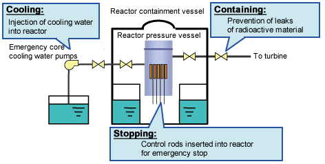

CORRECT!
The Emergency Core Cooling System (ECCS) is utilized during a Loss of Coolant Accident (LOCA). The fuel temperature rises and it might melt releasing fission products. The purpose of the ECCS is to limit the temperature to a predetermined and safe value. ECCS pumps also help in bringing down the decay heat to normal and can operate in complete station blackout situations thereby ensuring safe reactor operation at all times.
The Nuke Quiz #3
Question 3
How is reactor safety maintained in situations encountering loss of coolant flow?
